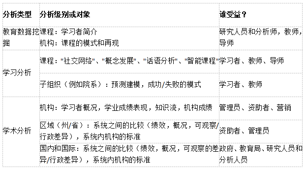
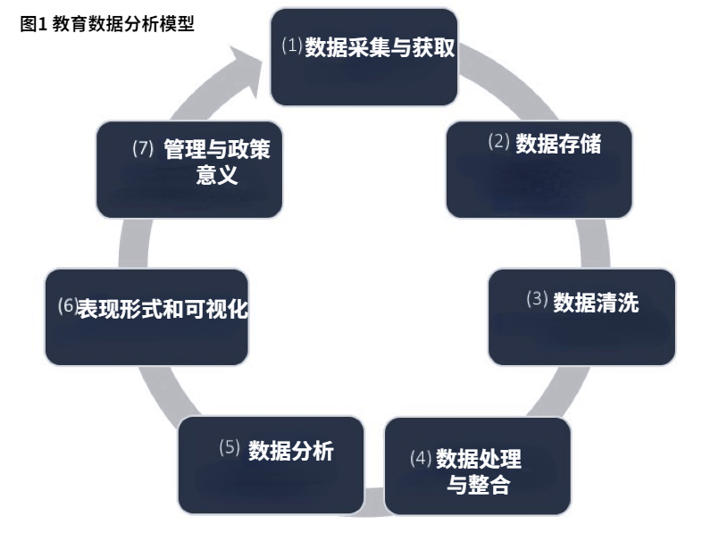

在最近出版的《当代教育经济学手册》一书中，Tommaso Agasisti和Alex J. Bowers概述了使用越来越多的数据来指导教育机构决策的重要性，从系统层面的联邦和州政策到学校和教室的教学和教学决策。
教育数据挖掘 （EDM）、学习分析 （LA） 和学术分析 （AcAn） 之间的区别
教育数据挖掘（EDM）将数据挖掘技术应用于有关学习过程决定因素的数据（例如，从在线学习知识管理系统收集的数据），以了解学习模式和数字轨迹。学习分析（LA）侧重于使用数据挖掘模型和其他高级技术来探索学生成就和学习过程输出的决定因素，以更好地为教学决策提供信息。学术分析（AcAn）使用统计分析和预测建模来了解组织层面的决定因素，目的是为校长和其他学校领导提供与机构运营和管理流程相关的决策指导。表 1 总结了这三种方法的主要区别。
表 1.教育数据挖掘，学习和学术分析之间的主要区别 - 分类

Agasisti和Bowers指出，这三种方法的分类必须"具有临时性，指示性而不是规范性"，并且可能需要随着文献的发展而进行修订。此外，这三种方法在实践中很难分开，因为它们共享分析技术，研究问题，政策影响以及描述使用定量数据指导决策过程的"数据循环"。
如图 1 所示，第一步"数据采集"涉及识别和收集要使用的相关数据集。然后在机构内构建数据集（"存储"），并进行清理。

Agasisti和Bowers建议教育数据科学家可以发挥关键作用，在"数据循环"中架起数据分析师和教育从业人员的桥梁，因为教育数据科学家"拥有收集，分析和使用定量数据的技术技能，同时拥有管理和沟通技能，与学校层面的决策者和管理人员互动，以个性化实际方式使用信息的良好方式改进做法和倡议"。
教育领域数据分析的数据和工具
Agasisti和Bowers引入了多种类型的数据分析和用于教育领域的工具。首先，在实施、管理和评估政策干预措施的政策层面，基于对学生成绩的大规模国际评估数据的研究特别有用，因为它们允许研究人员探索哪些做法和政策在不同国家有效，保持其他因素不变。还有越来越多的严格的实地实验，旨在为改善学生学习和学校表现的"有效"提供证据。其次，在校长改善学校运营和教师提高教学效率的学校实践层面，研究的重点是K-12学校的数据驱动决策。收集和分析有关学生成绩，学校管理和数字学习环境的数据，以帮助教师和校长发现问题并了解模式。对数据使用的研究表明，教师和领导者的数据素养和评估素养决定了他们能否成功地使用数据来为他们的决策提供信息。
为了说明数据分析如何提高学生的表现，作者描述了四个例子。首先，为了分析教学结果的系统级决定因素，国际阅读素养进展研究项目，国际数学与科学趋势研究和国际学生评估项目被广泛用于评估国家教育系统的有效性。其次，哈佛大学的战略数据项目和英国学校的最佳实践被证明是如何利用学校层面的信息来帮助学校领导了解学生学习模式的良好实践。第三，普渡大学开发的"课程信号"工具展示了如何使用特定于课程的数据向教师提供及时的反馈，以进行教学改进。第四，Degree Compass是利用学习分析来管理个人学生数据的界面之一。
在教育中使用分析的壁垒和障碍
Agasisti和Bowers总结了阻碍在教育中使用数据分析的四个障碍，并提出了降低这些障碍的潜在解决方案。第一个问题是对学生隐私的潜在威胁，因为许多工具都是建立在跟踪学生信息的基础上的。作者认为，"当数据分析或机器学习算法用于为学校循证的改进周期提供信息时，或者学习分析算法为学生学习的内容和教学提出建议时，必须使用开放代码和开放获取标准"。其次，为了解决数据的复杂性，研究人员建议使用数据仓库进行数据报告和分析。第三，为数据分析创建一个适当的平台可能代价高昂。然而，开放获取代码的发布将促进代码的共享，并降低构建此类平台的成本。第四，开发"在不过度简化（提供对学习过程复杂性的认识）的情况下呈现结果，但具有足够清晰度以使信息易于理解从而可用的"的方法具有难度和挑战。
前进的道路：系统性变革和教育数据科学家的作用
总而言之，作者建议教育数据科学家作为一种新的职业，将在改善学校和高等教育的数据使用方面发挥关键作用。预计教育数据科学家将"促进三个世界之间的沟通：第一个，数据分析和分析方面的技术专家之一，第二个，各级决策者（政策分析师，校长，机构经理），第三个，从事一线教学的教师团体"。作者呼吁提供更多的承诺和资源来培训这些新的专业知识，因为目前该领域缺乏培训和能力建设。
Agasisti, T., Bowers, A.J. (2017) Data Analytics and Decision-Making in Education: Towards the Educational Data Scientist as a Key Actor in Schools and Higher Education Institutions. In Johnes, G., Johnes, J., Agasisti, T., López-Torres, L. (Eds.) Handbook of Contemporary Education Economics (p.184-210). Cheltenham, UK: Edward Elgar Publishing. ISBN: 978-1-78536-906-3 http://www.e-elgar.com/shop/handbook-of-contemporary-education-economics
来源：哥伦比亚大学教育学院
上一条： 无